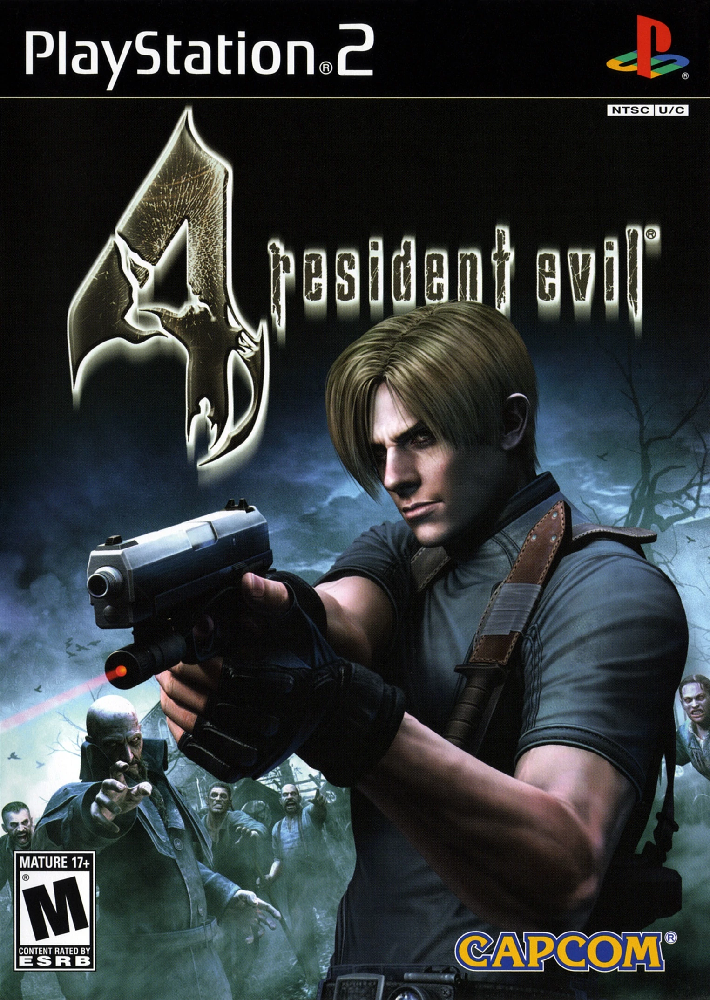

Grand Theft Auto San Andreas
Es el mejor juego de ps2 ya que tiene buenos gráficos, muy buena jugabilidad , mucha innovación y buen sonido. Lo que más me gusta del juego es que a pesar de tener un modo historia (el cual es buenisimo) es un mundo abierto donde podes pasar horas entretenido robando/comprando/explorando todo San Andreas.
Last updated 3 mins ago

Hit and Run
A pesar de sus ya 18 años, sigue siendo el mejor juego de la serie, desde sus decenas de referencias a la misma , hasta en las misiones y caracterizacion de los personajes, con Marge destruyendo las copias del juego parodia al Mortal Kombat, hasta la irresponsabilidad de Homero intentando atropellar el auto de Burns para llegar a tiempo al trabajo.
Last updated 3 mins ago

Crash of the Titans
Es fácil de jugar y adaptable para cualquier edad. A diferencia de las otras entregas este se basa más en el combate. Una de las cosas que más divierten es con la aparicion de los mutantes. La historia es corta, hay coleccionables y se puede jugar hasta dos personas.
Last updated 3 mins ago

Resident Evil 4
Juegazo, el mejor resident evil. Tanto la ambientación, como los personajes, las armas, los escenarios, la jugabilidad, todo es genial y está muy bien orquestado, además se añade una historia paralela con el personaje Ada que es estupenda. Muy buen juego de terror.
Last updated 3 mins ago

God of War II
Muy buen juego recordado por muchos ya que fue uno de los ultimos lanzamientos para ps2. Una de las mejores cosas son las batallas contra los jefes y es bastante rejugable para poder completar desbloqueables y pasarlo en la maxima dificultad. Un poco más de puzzles hubiera sido bueno, pero muy zafable.
Last updated 3 mins ago